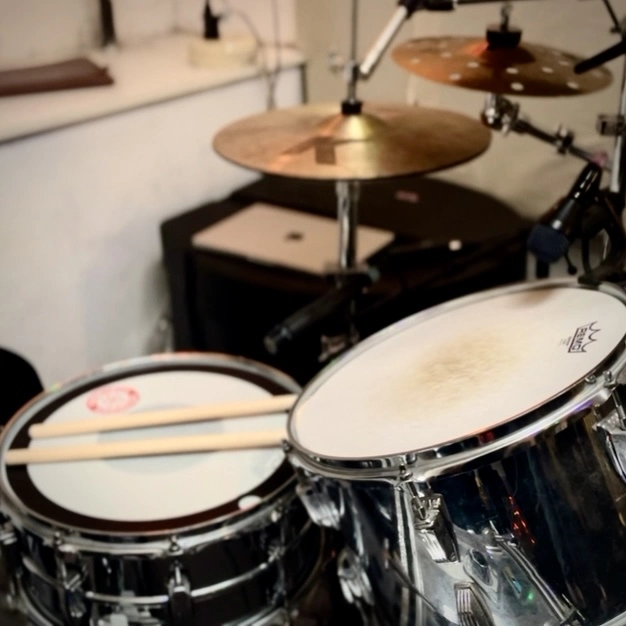

MY / WORK
02
//Web
På vores første tema lærte vi om de grundlæggende, og mest benyttede redskaber som man bruger som multimediedesigner.
03
//UX
På UX temaet fik vi en grundlæggende forståelse for UX (brugeroplevelse) og dets rolle i udviklingen af digitale brugergrænseflader.
04
//Animation
På animations temaet blev vi introduceret til JavaScript og CSS-animationer. Hovedopgaven 04.04.01 var at vi skulle kode et simpelt klik spil.
05
//Indhold
På indholds temaet fik vi en grundlæggende introduktion til videoproduktion, herunder planlægning, optagelse og postproduktion.
06
//Portfolio
Vores afsluttende tema, og eksamensopgave, var at vi skulle udvikle et individuelt portfolio website. Her skulle vi præsentere de projekter, vi havde arbejdet med i løbet af semesteret.
BACK